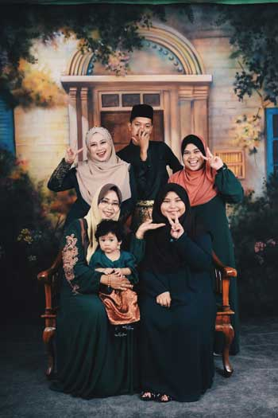
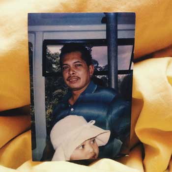
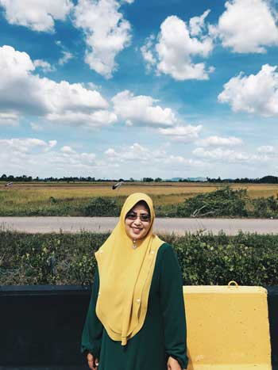
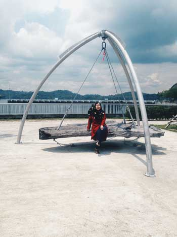
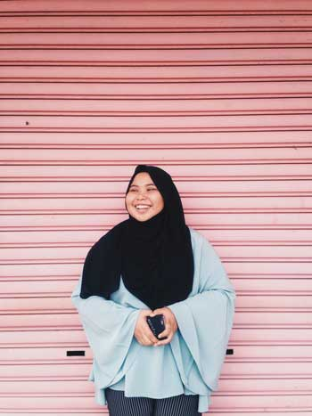

| Me | Family | Education | Experience | Gallery | Contact |
| Family  |
|||||
|
 Named as Zainud-din bin Abu Born at Pahang on 26th January 1964 and married to Rokiah bt Shaari, have three daughters Worked as fireman and a really good man as a husband and father An ambitious guy, worked really hard for his family but Allah decided it's his time to rest and meet Him on 27th August 2012 A really strong guy until his last breath, al-fatihah | |||||
|
 A super woman name Rokiah bt Shaari which born on 16th December 1968 at Alor Setar, Kedah and married to Zainud-din bin Abu Work as teacher in fews school such as Sekolah Kebangsaan Rapat Jaya and Sekolah Kebangsaan Sungai Rapat at Ipoh, Perak and now at Sekolah Kebangsaan Darulaman Height at Jitra, Kedah Experienced as Ujian Pencapaian Sekolah Rendah (UPSR) examiner for few years in Bahasa Melayu A mother, a father at the same time, a strong woman and a right person to look up to | |||||
|
 Zurul Az Zahra binti Zainud-din as an older sister Born on 17th January 1991 at Alor Setar, Kedah Nick name as "Baby" or called as Zara Married at the age of 24 years old on her birthday with Nor Izzat Have a daughter name Nur Imanina Azzahra binti Nor Izzat born on 22th October 2015 Graduated from Politeknik Sultan Idris Shah, Selangor under Office Management course Work as secretary at Malaysian Communications and Multimedia Commission (MCMC), Cyberjaya Her hobby are sing and watch hindustan's movies | |||||
|
 Younger sister name Madihah Az Zahra binti Zainud-din Born on 11th August 2004 at Ipoh, Perak Nick name as "E'a" / Dihah School at Sekolah Menengah Darulaman Height, Jitra, Kedah As she love korean pop (k-pop) such as Bangtan Boys group, she surely do spend the money on kpop stuff She also do read comic (a lot), watch movies and eat | |||||